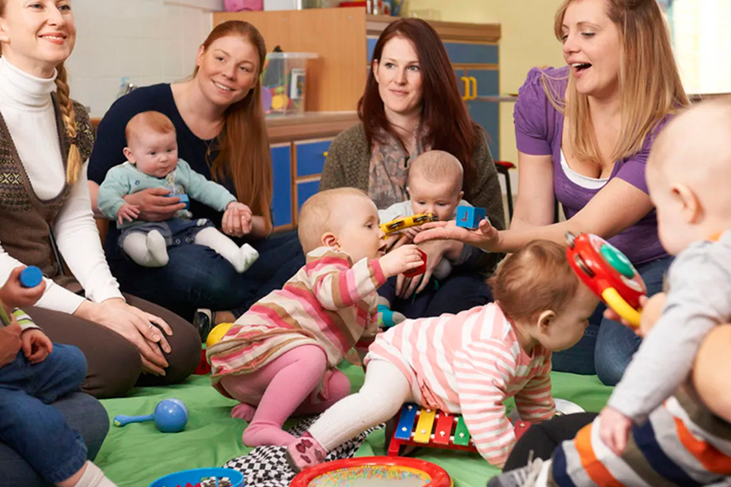
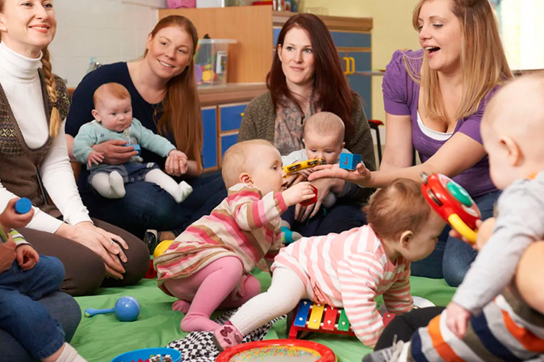
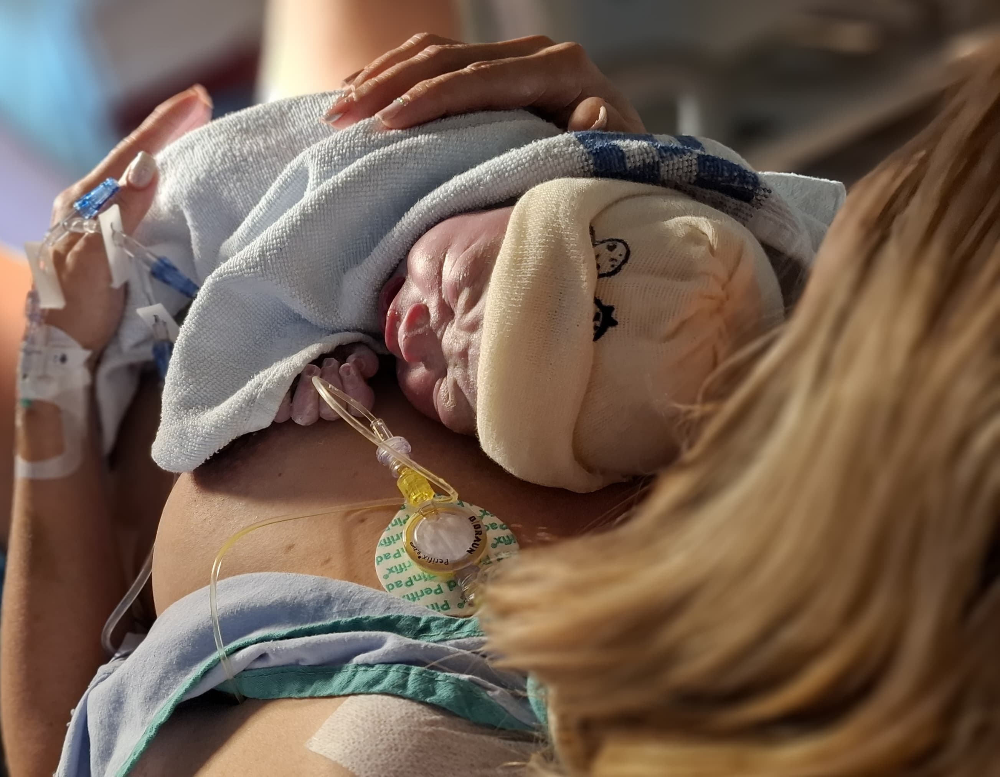
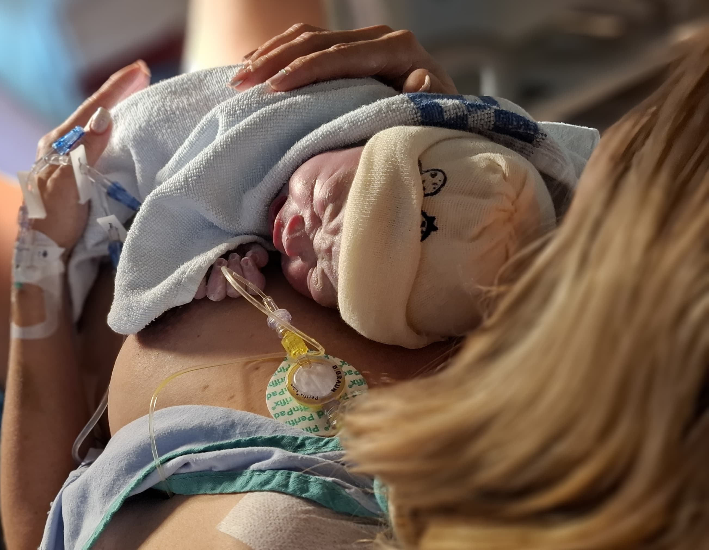

¿Qué pasa después del parto?
Los primeros días y semanas tras el nacimiento de tu bebé están llenos de cambios profundos...
Cambios físicos
Físicamente, tu cuerpo comienza un proceso de recuperación...
- Sangrado posparto: Un flujo vaginal que comienza rojo intenso...
Consejos prácticos
Descansa en turnos con tu pareja, acepta ayuda sin sentir culpa...
Lactancia materna: primeros días
Un momento real de lactancia: no siempre es fácil, pero siempre es amor.
Al principio, tu areola estará muy sensible, la temperatura de tus senos será más alta, y sentirás una sensación de hinchazón causada por la subida de la leche materna. A medida que tu bebé vaya vaciando tus pechos, experimentarás alivio progresivo, y, en el transcurso de una a dos semanas, esta incomodidad irá desapareciendo poco a poco.
Es muy importante que, si en algún momento no puedes amamantar directamente a tu bebé, te extraigas la leche (manualmente o con un sacaleches) para evitar la acumulación excesiva de leche, lo que podría derivar en una mastitis.
- Posición correcta: El bebé debe tomar el pezón y gran parte de la areola.
La lactancia no tiene que ser perfecta para ser valiosa. Cada intento cuenta.
Salud emocional
Es común sentir tristeza, ansiedad o agotamiento. No estás sola.
Galería del postparto

 

 


Mi diario posparto
Tus reflexiones se guardan en este navegador.
Entradas guardadas
Pide apoyo
¿Necesitas orientación, recursos o simplemente alguien que escuche? Escríbenos.